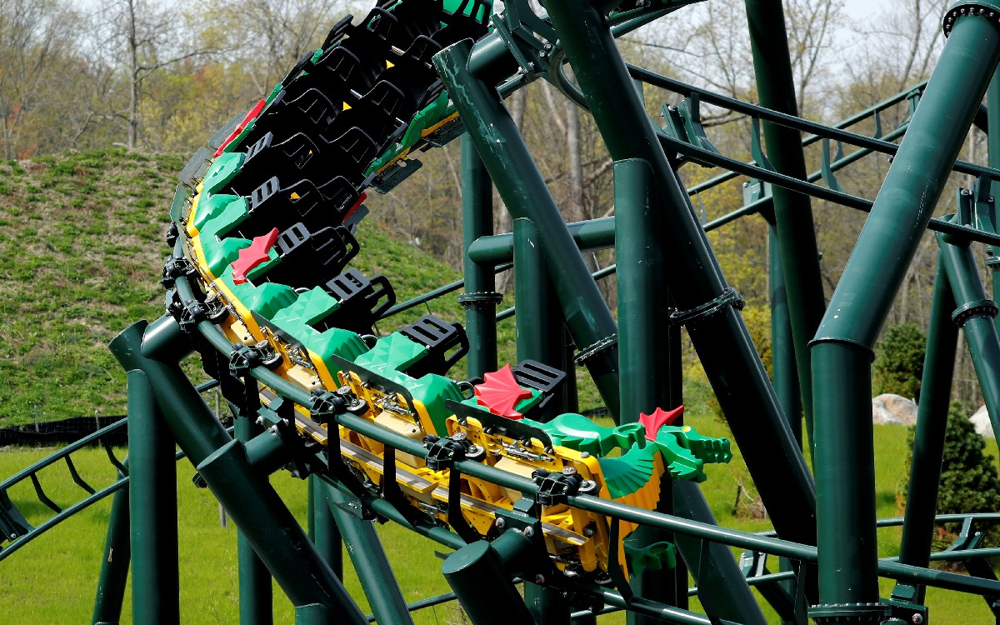
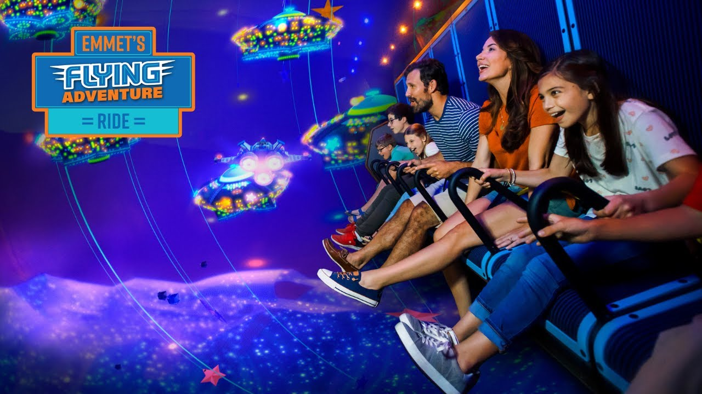
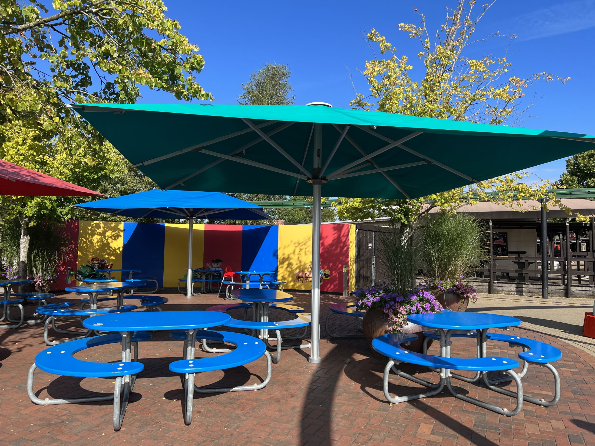

Las mejores atracciones en LEGOLAND Billund, Dinamarca, incluyen la montaña rusa The Dragon, la inmersiva Emmet’s Flying Adventure en THE LEGO® MOVIE™ World, y la emocionante Polar X-plorer.

inmersiva Emmet’s Flying Adventure en THE LEGO® MOVIE™ World

y la emocionante Polar X-plorer
tambien hay sitios de ocio para comer o descansar

Las entradas para LEGOLAND Billund, Dinamarca, para la temporada 2026 tienen un coste aproximado de 469-519 DKK (aprox. 63€-70€) al comprar online para un día, variando según la antelación y la fecha. Los niños menores de 3 años suelen tener entrada gratuita. Se recomienda reservar con antelación para obtener mejores precios.